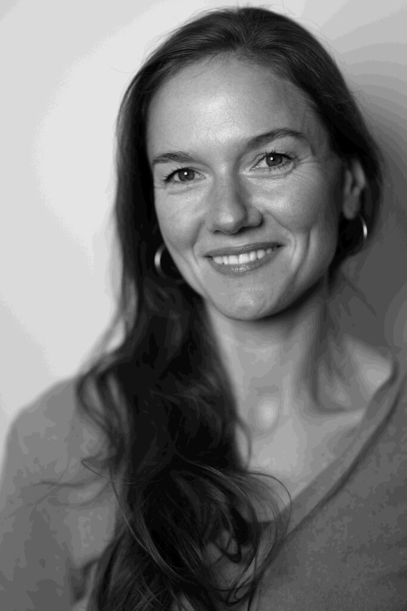

Malpause
Kunst als Weg in den Moment
Künstlerisch tätig zu sein bedeutet, ganz im Jetzt zu sein. Hände, Kopf und Gefühl arbeiten zusammen. So entsteht Raum für das, was im Alltag oft keinen Platz findet. Schritt für Schritt gestaltest du dein Werk und entdeckst, was gerade wichtig ist - im Bild, im Tun, im Erleben.
Kunsttherapie
Kunsttherapeutische Begleitung
Die Kunsttherapie richtet sich an Menschen, die sich in herausfordernden Lebensphasen befinden oder sich intensiver mit sich selbst auseinandersetzen möchten. Der kreative Prozess unterstützt dabei, innere Themen sichtbar zu machen und neue Perspektiven zu entwickeln.
Workshops
Workshops und kreative Auszeiten
Diese Angebote sind offen für alle, die gerne kreativ sein möchten, sich eine bewusste Pause vom Alltag wünschen und ohne Druck und Bewertung gestalten wollen. Ob Zeichnen, Malen oder experimentelles Arbeiten: Im Fokus stehen Ausdruck, Freude und Entschleunigung.
Eltern-Kind-Kurse
Gemeinsam kreativ sein
Gemeinsames kreatives Tun stärkt Verbindung, Präsenz und Beziehung. Hier wird niemand "abgegeben" - alle sind beteiligt. Die Kurse schaffen einen geschützten Rahmen für gemeinsames Entdecken, Gestalten und Erleben.

Ich begleite dich
Laura McLardy - Kunstpädagogin und Kunsttherapeutin
Als Pädagogin mit über 10 Jahren Erfahrung an Schulen im In- und Ausland durfte ich erleben, was es braucht, damit Schülerinnen und Schüler im Tun aufgehen, Selbstwirksamkeit erfahren und sich selbst besser kennenlernen. Auch in meinen partizipativen Kunstprojekten wurde mir immer deutlicher, welches Potenzial Kunst hat, Begegnungen zu schaffen und Erfahrungsräume zu öffnen - Räume, in denen Menschen sich selbst und ihre Umwelt neu wahrnehmen können.